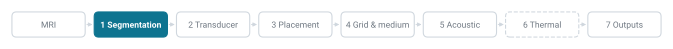

Head Model¶

The skull reflects, attenuates, and refracts ultrasound, so how the head is represented in the simulation shapes the predicted focus and intensity. PRESTUS turns the tissue labels of the segmentation into that representation: it orients, resamples, smooths, and crops the labels into the simulation grid.
On this page:
- From Segmentation to Grid: orientation, scaling, layer mapping, cropping, and smoothing of the property maps.
- Air-Cavity Check: whether the beam crosses a sinus or other internal air.
- Segmentation Report: checking each of these steps on your subject.
At a glance
- When you need it: Rarely: the defaults suit most studies. Read it when the skull looks wrong in the report, or to understand why the grid has the size it has.
- Before you start: A
layeredsimulation with a SimNIBS segmentation.
From Segmentation to Grid¶
PRESTUS turns a layered segmentation into a simulation grid in three steps: a single resample that rotates and rescales each image (Orientation and Scaling), layer mapping with mask smoothing and skull hole filling, and cropping with padding. Optional smoothing of the property maps runs later, when the medium is set up. The settings of each step, with their defaults and options, are listed under Head model parameters.

Orientation¶
The head is rotated before cropping so that the beam runs along the grid's z axis. By default (focal_axis) the mean beam axis of all transducers is aligned with z; with one transducer this is its beam axis. transducer_axis follows transducer 1 instead, for set-ups where the other transducers are secondary, and ras_plus skips the rotation and keeps the world-space (RAS+) orientation. The options are listed under grid.mode.
Scaling¶
The planning image, the segmentation, and the bone mask (or (pseudo-)CT) are resliced to grid.resolution_mm by isotropic scaling and centred regridding, in the same resample as the rotation. Images with fewer than 20 distinct values, such as masks and segmentations, use nearest-neighbour interpolation; all others, such as the planning image or a (pseudo-)CT, use linear interpolation.
Layer Mapping and Smoothing¶
The SimNIBS segmentation (10 tissues) is mapped onto the layers in layers. The default lists six: water, brain, skin, skull (label 4), skull_cortical, and skull_trabecular. Labels not assigned to another layer become water, which by default includes CSF (label 3), eyes, blood, and muscle. A requested layer without a segmentation label is dropped. A charm segmentation has no label 4, so the default skull layer is dropped and the head consists of brain, skin, cortical and trabecular bone in water; with a pseudo-CT the skull layers are merged into one skull layer. Each layer index corresponds to its position in medium_properties, so layers can be added or removed without changing the ids of the others.
Each layer mask is smoothed (Gaussian kernel of 1 mm FWHM by default) and binarised; voxels that no layer keeps become water. Holes in the skull are then filled where brain meets skin, by default with a rubber wrap that bridges holes up to about 10 mm wide; filled voxels become cortical skull. The filter, kernel width, thresholds, and fill method are set in headmodel.
With a two-layer skull, cortical and trabecular bone are first combined and smoothed as one skull, which becomes cortical bone; the trabecular layer is then smoothed and added inside it. Holes in the combined skull are filled afterwards and become cortical bone.
Cropping¶
The grid is cropped tightly around the head and every transducer bowl, with a 1-voxel margin; k-Wave adds the PML outside the grid. This keeps the simulation as small as possible. The head region extends 20 mm beyond the CSF segmentation (headmodel.csf_expansion); voxels outside it become water and are eligible for cropping. The volume is padded automatically (with a warning) if a bowl centre falls outside it, so extra padding (headmodel.head_pad_mm) is rarely needed; padding beyond the head and bowls is cropped away and does not slow the simulation. See headmodel.
Crop bounds and FFT-friendly sizes
The crop box encloses the layered medium mask and the bowl geometry of every transducer, plus a 1-voxel margin; the PML lies outside the grid. With several transducers all bowls count, which matters for bilateral set-ups: without the contralateral bowl, that side of the grid would be bounded only by the CSF-expanded head and would carry unused space. Rotation follows the mean beam axis in the default focal_axis mode and transducer(1)'s axis in transducer_axis mode; all transducers are mapped into the same space before the bounds are computed. The box is then enlarged by up to grid.max_expand voxels per dimension to sizes with small prime factors (find_min_factor), which makes k-Wave's FFTs faster. The medium stays anchored at its origin, so transducer and target do not move relative to the head. All transformations are concatenated and applied to the transducer and target positions.
Property Map Smoothing¶
Sharp transitions between tissues reflect sound. headmodel.smooth_properties: true smooths the acoustic and thermal property maps themselves during medium setup, with the same filter and kernel as the masks. It is off by default. Pseudo-CTs made with PRESTUS already smooth the skull edges (pseudo-CT), so property smoothing is usually not wanted with them. Recommended settings are an active area of investigation.
Which property each tissue gets is described in Medium properties.
Air-Cavity Check¶
Air reflects almost all ultrasound that reaches it, but the head model fills the sinuses and mastoid air cells with their layer's properties, water by default. A beam that crosses the frontal sinus, as frontal approaches to medial prefrontal targets can, is therefore shown reaching the brain when in reality little of it would. The air-cavity check reports how much of the simulated beam enters these cavities, so you can recognise such placements and choose another.
The check runs by default for layered media. headmodel.air_cavities.source selects where the air comes from (none turns the check off):
simnibs(default) takes the internal air that SimNIBS charm segments (label 501, Air-Internal, insegmentation/labeling.nii.gzof the m2m folder): the sinuses, the nasal cavity and airway, and the mastoid air cells. It needs only the T1 segmentation.final_tissues.nii.gzdoes not contain this label: charm merges internal air into the background (0) there. If the labelling has been deleted from the m2m folder, the run warns and skips the check.hutakes air from the CT or pseudo-CT. A pseudo-CT may show parts of the nasal cavity and airway as soft tissue, so it can find less air thansimnibs.segmentationtakes the labels you list inlabels, for a segmentation that labels air.
The check leaves the medium and the field unchanged. After the acoustic simulation it reports two measures: the peak pressure inside the cavities relative to the brain peak, and the largest share of the −6 dB beam cross-section that the cavities fill at any depth between the exit plane and the focus. When either exceeds its threshold (warn_db, warn_beam_fraction), the run log warns and the report flags the placement. The settings are listed under headmodel.air_cavities; the values are in the metrics table.
How the beam share is measured
Along each transducer's axis, from the exit plane to the focus, the field is cut into slabs one voxel thick, within a cylinder of the aperture radius. In each slab the −6 dB beam cross-section is the set of voxels with at least half the slab's peak pressure. The beam share is the fraction of these voxels inside the cavities; slabs with fewer than 5 beam voxels are skipped. The largest share over all slabs and transducers is reported, with its depth from the exit plane, and so is the share over the whole prefocal −6 dB volume. With source: simnibs, the charm labelling is mapped onto the simulation grid with the same rotation, scaling, and crop as the segmentation (nearest neighbour). With source: hu, voxels in hu_window are filtered by a 3-voxel majority vote, and the largest connected component (the air around the head) is removed, together with every component touching the grid edge unless keep_boundary is set, as in BabelBrain's air regions.
The check is a warning, not a model of the air: the field beyond a flagged cavity is not corrected.
Segmentation Report¶
Each step above changes tissue labels, and a setting that suits one head can open or thicken the skull in another. The segmentation report shows what each step did on your subject, so you can check the head model before relying on the simulation.
A layered run writes sub-XXX_layered_segmentation_report<affix>.html next to the simulation report after the grid stage (report.segmentation: 1, default). It lists the steps in order: SimNIBS segmentation, tissue mapping and smoothing, skull hole filling, eyes to water, CSF-based crop, and grid crop. For each step it shows:
- slices through the focus before and after the step, and the voxels it changed; choose the plane and size, and hover for the voxel index and tissue;
- the voxels moved between tissues, with their volume and their share of the source tissue;
- the settings that drove it.
A summary table lists the largest changes of every step, and a further table gives the volume of each tissue after each step. The header links to the SimNIBS charm_report.html, which checks the segmentation itself.